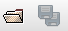
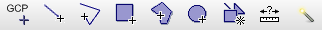
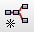

SNAP
The SeNtinel Application Platform (SNAP) is an open source architecture for European Space Agency (ESA) toolboxes designed for exploitation of earth observation data under the the Scientific Exploitation of Operational Missions (SEOM) programme. SNAP is the common architecture for the Sentinel 1, 2 and 3 Toolboxes, which support the scientific exploitation for the ERS-ENVISAT missions, the Sentinel 1/2/3 missions and a range of national and third party missions. Those toolboxes contain the functionalities of previous toolboxes such as BEAM, NEST and Orfeo Toolbox. SNAP not only enables simple functionalities, such as opening and exploring data products, but also creating and computing complex, user-defined processing chains.
{kind=link}
Default layout in SNAP
- 1 Toolbar: Main menu and standard tools for saving/opening data products , navigation over image data , as well as point, line and polygon feature drawing tools . The main functionality is listed in the main menu under the menu items Raster, Optical and Radar. Those are also accessible via the graph builder , which we will use to automate and chain operations later on
- 2 Product Explorer: lists all loaded data products along with their metadata and band information. The Pixel Info tab allows you to get all the information about the coordinates and raster values of where the mouse pointer is pointing. Double click a band in order to visualize it in the Image View panel, or right click a file and choose “open RGB image window” for a RGB composite
- 3 Navigation Tool Window: The Navigation and World View tabs allow you to spatially locate the current image view in the overall picture and on a 3d globe. Furthermore the Color Manipulation tab allows visual adjustments via histogram stretching
- 4 Product Library: browse and view metadata of your locally stored Sentinel data products or search for new data sets on the ESA SciHUB servers. Have a look at chapter ESA SciHUB for more
- 5 Image View: data you have loaded in your current session can be visualized here. If multiple data sets are open, you can switch back and forth between them by clicking on the tabs at the top of the Image View or tile them vertically or horizontal by clicking on in the toolbar (1).
There is an official science toolbox expoitation platform, STEP for short. On this website you can access useful video tutorials showing most of the basic functionalities of SNAP. Furthermore there is an official STEP-forum, in which you can communicate with the SNAP developers or ask the sience community.
SNAP not only supports the Sentinel missions, but also a wide range of third party products, including optical data (Sentinel 2 Toolbox), e.g., RapidEye, SPOT, MODIS (Aqua and Terra), Landsat (TM), and SAR data (Sentinel 1 Toolbox), e.g., ERS-1/2, ENVISAT, ALOS PALSAR, TerraSAR-X, COSMO-SkyMed and RADARSAT-2.